Lesson content · 课文
Lesson 20: Look at them! · 看看他们／它们！
Listen and answer the questions. 听录音并回答问题。
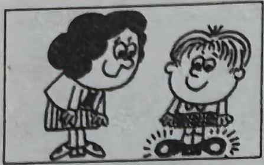
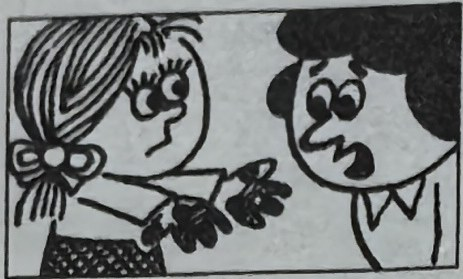
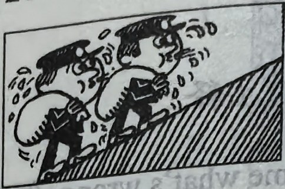
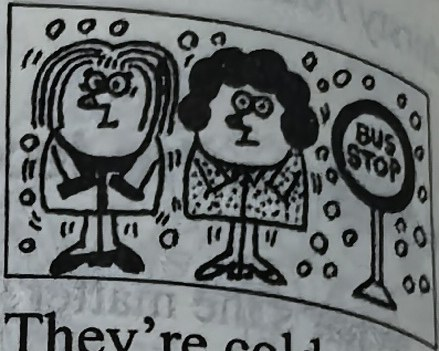
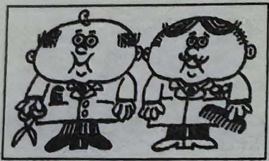
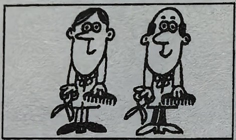
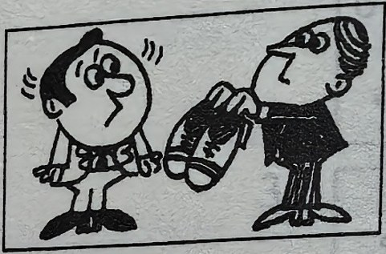
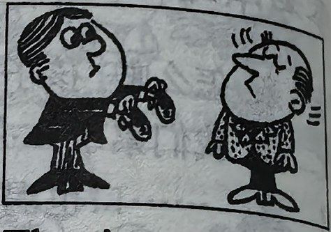
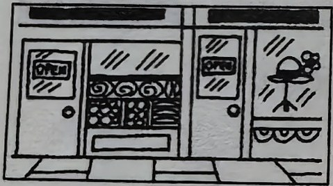
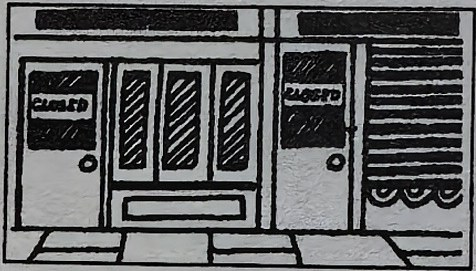
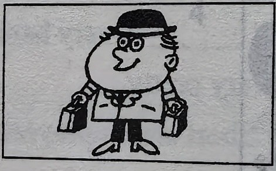
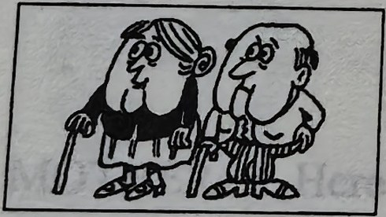
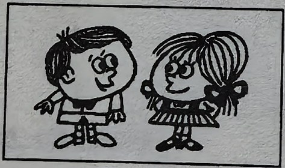
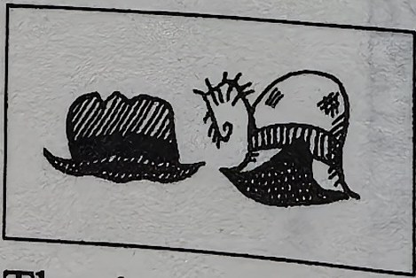
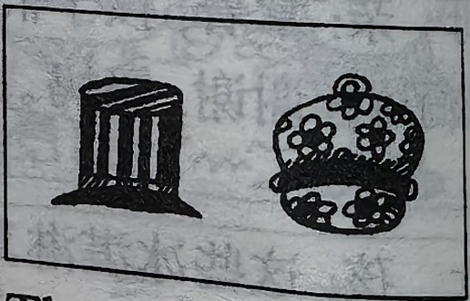
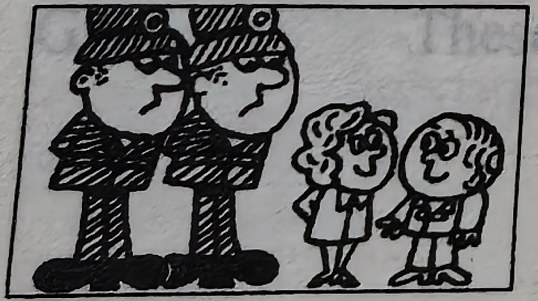
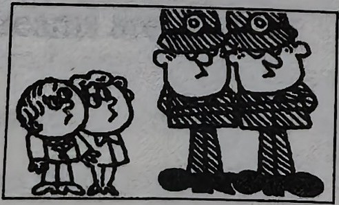
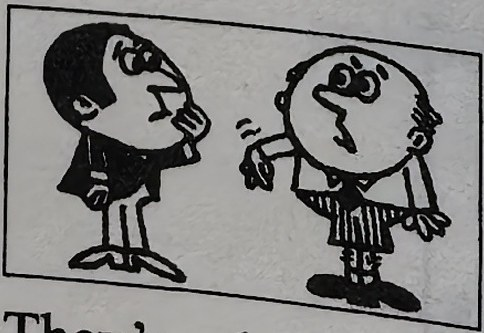
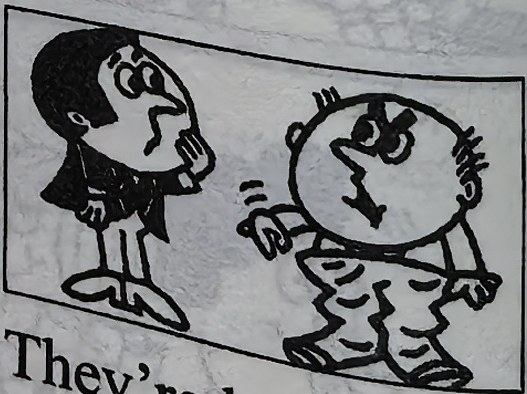
New words and expressions · 生词和短语
| Word · 单词 | Pronunciation · 音标 | Meaning · 词义 |
|---|---|---|
| big | /bɪɡ/ | adj. 大的 |
| small | /smɔːl/ | adj. 小的 |
| open | /ˈəʊpən/ | adj. 开着的 |
| shut | /ʃʌt/ | adj. 关着的 |
| light | /laɪt/ | adj. 轻的 |
| heavy | /ˈhevi/ | adj. 重的 |
| long | /lɒŋ/ | adj. 长的 |
| shoe | /ʃuː/ | n. 鞋子 |
| grandfather | /ˈɡrænfɑːðə/ | n. 祖父，外祖父 |
| grandmother | /ˈɡrænmʌðə/ | n. 祖母，外祖母 |
Practice · 课文练习
Written exercises · 书面练习
A. Am, is or are
Complete these sentences using am, is or are. 抄写以下句子，用 am、is 或 are 填空。
Example · 例句
Those children are thirsty.
-
textbook: A. Am, is or are — Those children ____ tired.
-
textbook: A. Am, is or are — Their mother ____ tired, too.
-
textbook: A. Am, is or are — That ice cream man ____ very busy.
-
textbook: A. Am, is or are — His ice creams ____ very nice.
-
textbook: A. Am, is or are — What’s the matter, children? We ____ thirsty.
-
textbook: A. Am, is or are — What’s the matter, Tim? I ____ tired.
B. Questions and answers · 提问并回答
Write questions and answers. 模仿例句提问并回答。
Example · 例句
his shoes / (dirty) / clean
Are his shoes dirty or clean?
They’re not dirty. They’re clean.
-
textbook: B. Questions and answers · 提问并回答 — the children / (tired) / thirsty
-
textbook: B. Questions and answers · 提问并回答 — the postmen / (cold) / hot
-
textbook: B. Questions and answers · 提问并回答 — the hairdressers / (thin) / fat
-
textbook: B. Questions and answers · 提问并回答 — the shoes / (small) / big
-
textbook: B. Questions and answers · 提问并回答 — the shops / (shut) / open
-
textbook: B. Questions and answers · 提问并回答 — his cases / (heavy) / light
-
textbook: B. Questions and answers · 提问并回答 — grandmother and grandfather / (young) / old
-
textbook: B. Questions and answers · 提问并回答 — their hats / (old) / new
-
textbook: B. Questions and answers · 提问并回答 — the policemen / (short) / tall
-
textbook: B. Questions and answers · 提问并回答 — his trousers / (short) / long
Practice worksheet · 配套练习
A. Structure
Write the irregular plural. 写出以下不规则名词的复数形式。
-
worksheet: A. Structure — a man → two ____
-
worksheet: A. Structure — a woman → two ____
-
worksheet: A. Structure — a postman → two ____
-
worksheet: A. Structure — a milkman → two ____
-
worksheet: A. Structure — a child → two ____
-
worksheet: A. Structure — a housewife → two ____
-
worksheet: A. Structure — an ice cream man → two ____
-
worksheet: A. Structure — a policewoman → two ____
B. Structure
Write questions and negative answers. Add a statement using the opposite adjective. 模仿例句完成以下练习。
Example · 例句
Are your hands clean? — No, they aren’t. They’re dirty.
-
worksheet: B. Structure — her shoes / white?
-
worksheet: B. Structure — his trousers / long?
-
worksheet: B. Structure — the ice creams / small?
-
worksheet: B. Structure — their children / old?
-
worksheet: B. Structure — the shops / shut?
-
worksheet: B. Structure — your passports / old?
-
worksheet: B. Structure — your cases / light?
-
worksheet: B. Structure — the women / hot?
-
worksheet: B. Structure — the boys / tall?
C. Situations
What do you say? 根据以下情景写出你应该说的话。
-
worksheet: C. Situations — You see a little boy or girl crying. You want to know what’s wrong.
-
worksheet: C. Situations — You ask a man for two ice creams. Which polite word do you add?
Grammar practice · 语法练习
I. Make statements using the cues given according to the example
Example: we/cold/hot -> We're cold. We aren't hot.
they/short/tallthose doors/shut/openthese boxes/heavy/lightmy skirts/long/shortwe/hard-working/lazyyou/young/oldthese dresses/new/oldthose watches/small/bigthose housewives/lazy/hard-workingthese policemen/fat/thinyour hands/clean/dirtyour hats/white/blackthese children/good/bad
II. Rewrite the sentences in the plural according to the example
Example: My book is heavy. -> My books are heavy.
- Your student is hard-working.
- This air hostess is busy.
- Your shoe is dirty.
- This ice cream is nice.
- The shop is shut.
- That tourist is thirsty.
- His child's hand is clean.
- This old housewife is tired.
- Her box is light.
- He's tall.
- She's thin.
Your notes and answers
Use this space for longer responses or exercises that do not have an individual answer box.